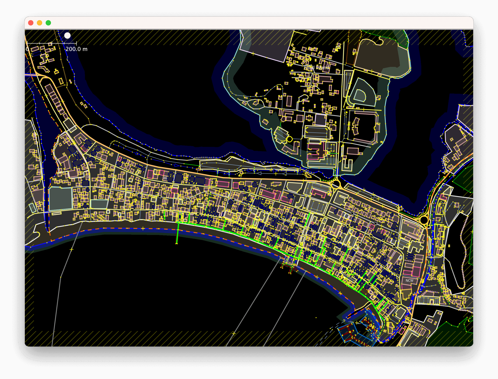
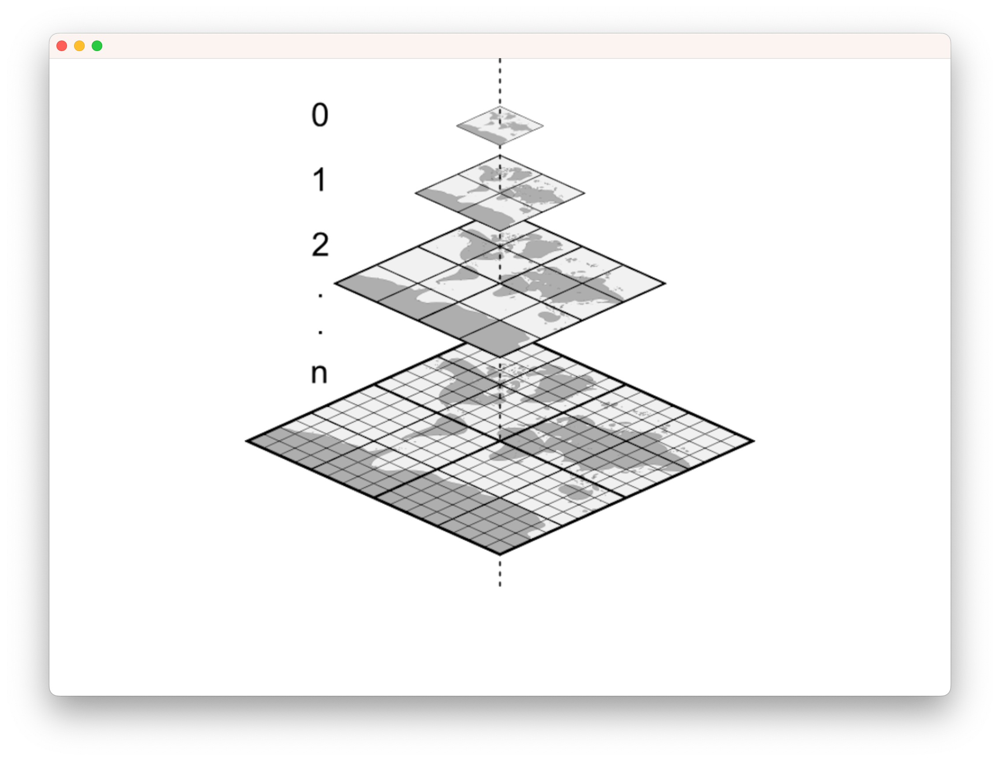
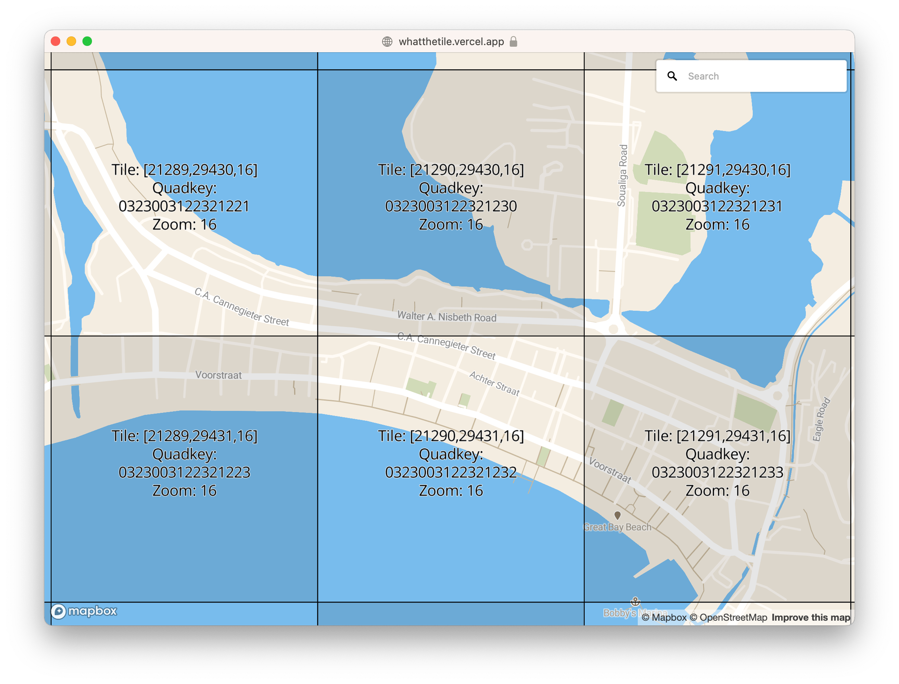

Робимо власні тайли⚓︎
Тайли від сторонніх постачальників – це найпростіший спосіб переходу на OpenStreetMap, до того ж він дозволяє точно виміряти ваші витрати. Однак, якщо ви бажаєте мати повний контроль над долею, ви можете створювати та розповсюджувати ваші власні тайли. В цьому розділі йдеться про те, як це зробити.
|  |  |  |
|---|---|---|
| Сирцеві дані OpenStreetMap | Ваш власний тайловий сервер | Відвідувачі переглядають мапу на вашому вебсайті |
{kind=link}
{kind=link}
{kind=link}
Ви точно цього бажаєте?⚓︎
І генерація тайлів, і їх розповсюдження вимагають наявності доволі потужного обладнання, особливо, якщо вам треба мати глобальне покриття та регулярні оновлення.
Для розгортання власного тайлового сервера ми радимо використовувати Ubuntu Linux або Debian.
Варіанти⚓︎
-
Встановлення на Debian 13, Debian 12, Debian 11, Ubuntu 24.04, Ubuntu 22.04, Ubuntu 20.04 або на Ubuntu 18.04.
-
Використання docker.
Системні вимоги⚓︎
Обслуговування власних мап це доволі витратне завдання. В залежності від розміру території, яка вам потрібна та очікуваної кількості трафіку, вимоги до обладнання можуть змінюватись в широкому діапазоні. Переважно, вимагатиметься наявність сховища на 10-20 ГБ, 4 ГБ оперативної памʼяті, а також сучасного двоядерного процесора для роботи з мапою середнього міста, або більше ніж 1 ТБ для сховища, 24+ ГБ оперативної памʼяті та не менш ніж чотириядерний процесор для всієї планети.
Ми радимо вам розпочати роботу з невеличких частин даних OpenStreetMap – з міста, району чи області. Це краще ніж витратити тиждень на імпорт всього світу (planet.osm) і потім почати все наново після виявлення помилки в налаштуваннях! Ви можете завантажити дані частинами з:
- Geofabrik (країни та регіони)
- Protomaps Extracts (щохвилинні оновлення міст та невеличких країн)
- download.openstreetmap.fr
Інструментарій⚓︎
Ми використовуємо різні інструменти для створення та обслуговування тайлів.
Apache – сервер, який обслуговує звернення від ваших вебоглядачів та передає їх сервісу mod_tile. Крім цього вебсервер Apache може використовуватись для обслуговування статичного вебконтенту, такого як HTML, JavaScript та CSS для вашої сторінки з мапою.
Після надходження від користувача запиту Apache направляє запит до mod_tile для подальшої обробки. Mod_tile перевіряє, чи тайл вже створено і він готовий до використання або він вимагає оновлення через його відсутність в кеші. Якщо тайл доступний і не потребує створення, він негайно надсилається клієнту. У випадку потреби у його створені, тайл додається в “чергу генерації”, і коли настає його черга, процес генерації тайлів (рендер) створює його та надсилає клієнту.
Для створення тайлів ми використовуємо інструмент з назвою Mapnik. Він бере запити з черги, як тільки вони там зʼявляються, витягує дані із різноманітних джерел, відповідно до інформації про стиль, та генерує тайли. Тайл надсилається до клієнта, а Mapnik переходить до наступного елемента в черзі.
Для потреб генерації тайлів, дані OpenStreetMap зберігаються в базі даних, яка обслуговується сервером баз даних PostgreSQL. Для переміщення даних в базу використовується osm2pgsql. Ці два інструменти працюють разом щоб в ефективний спосіб отримувати геопросторові дані OpenStreetMap. Ви можете підтримувати актуальність вашої бази даних PostgreSQL користуючись потоком diff-файлів, які створюються кожні 60 секунд на сервері OpenStreetMap.